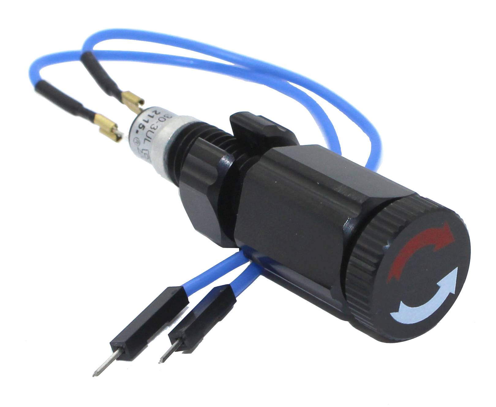

Electrical Switch
A depth-rated electrical switch allows turning a circuit in an enclosure on and off from outside the enclosure. It can be used
- to prevent unintentional arming of the vehicle
- for disconnecting power to the control electronics to reduce idle power usage
- for sending a signal to the electronics (e.g. to activate a programming / communication mode)

Supported Electrical Switches
Other Known Switch Types
- Reed Switch
- The switch component sits on the inside of the enclosure wall / end cap, and a magnet can be put on or removed from the other side to open/close the switch circuit